Was der Copter tragen kann
Nutzlast, Sensorik und Bildstabilisierung: was ein Gimbal kostet, warum die dritte Achse die teuerste ist und wann ein fester Halter mit guter Dämpfung das bessere Bild liefert.
Ratgeber · Kamera & Nutzlast · Lesezeit ca. 26 Min · Stand: November 2026
Kurz gesagt
Nutzlast wird mehrfach bezahlt. 220 g Kamera und Gimbal sind an einem 13-Zoll-Copter mit rund 3,2 kg rund 7 Prozent mehr Abfluggewicht. Nach der Herstellertabelle kosten sie aber rund 13 Prozent mehr Schwebeleistung, weil der Motor dabei aus seinem effizientesten Bereich wandert. Gimbal und Dämpfung lösen verschiedene Probleme: der Gimbal nimmt die langsame Fluglage heraus, die Dämpfung die schnelle Vibration. Wer das eine gegen das andere einsetzt, bekommt beides nicht. Die dritte Achse ist die teuerste. Beim selben Hersteller, mit identischer Traglast, wiegt die 3-Achsen-Ausführung 240 g und die 2-Achsen-Ausführung 180 g: ein Drittel Mehrgewicht allein für die Gierachse, die am wenigsten Bildfehler entfernt. Elektronische Stabilisierung kostet Bildwinkel statt Gramm und ist deshalb für leichte Builds fast immer die richtige Wahl. Und: eine Kamera an Bord macht dich registrierungspflichtig, unabhängig vom Gewicht.
Über den Frame, die Motoren, den Akku und die Videoübertragung haben wir bereits ausführliche Ratgeber geschrieben. Damit steht der Copter und das Bild kommt beim Piloten an. Offen ist die Frage dazwischen: was hängt unter dem Copter, und warum sieht das Bild trotzdem aus, als würde es zittern? Dieser Ratgeber behandelt die Nutzlast als das, was sie technisch ist: eine Masse an einem Hebelarm, die Strom zieht, Bauhöhe braucht und die Rechtsklasse des Fluggeräts verändert. Und er behandelt die Bildstabilisierung als das, was sie ist: zwei völlig verschiedene Verfahren, die dasselbe Wort im Namen tragen.
Was dieser Artikel nicht behandelt: die Videoübertragung selbst, also die Strecke nach der Kamera, steht vollständig im Ratgeber zur Videoübertragung. Die Kamerawahl nach Bildqualität (Sensorgröße, Bitrate, Farbprofile) ist ein eigenes Thema und kommt später. Flight Controller und Regler haben eigene Ratgeber (Flight Controller, ESC). Hier geht es nur um die Schnittstelle, über die ein Gimbal angesteuert wird. Vermessungs- und Fotogrammetrie-Abläufe sind Anwendungsthemen, keine Bauteilthemen, und bleiben außen vor.
Hinweis: Jede Zahl in diesem Text hat eine Fußnote, die auf eine nachprüfbare Quelle zeigt. Wo wir gerechnet statt gemessen haben, steht es ausdrücklich dabei. Für den Fall, dass wir einen Fehler gemacht haben, kontaktiert uns gerne jederzeit.
Transparenz: Einige Produktlinks in diesem Artikel sind Affiliate-Links und als (Anzeige) markiert. Kaufst du darüber, erhalten wir eine kleine Vergütung, für dich ändert sich am Preis nichts. Empfohlen wird nur, was wir fachlich begründen können, und die Begründung steht immer im Text.
1. Was Nutzlast wirklich kostet
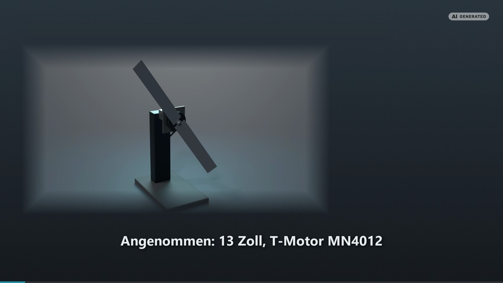
Die naive Rechnung geht so: Der Copter hebt 5,8 kg, er wiegt 3,2 kg, also bleiben 2,6 kg für die Nutzlast. Diese Rechnung ist in jedem einzelnen Schritt richtig und im Ergebnis wertlos, weil kein Multicopter bei Vollgas schwebt. Was zählt, ist nicht der Maximalschub, sondern die Frage, wie weit ein Motor bei Schwebeflug schon vom Gas ist und wie teuer das nächste Gramm wird.
Rechnen wir mit einem Beispiel. Angenommen ist ein 13-Zoll-Copter mit vier Motoren MN4012 mit KV 400 an 6S. Sie stammen von T-Motor, einem Hersteller von Drohnenantrieben. Dazu kommen Propeller mit 13 Zoll Durchmesser und 4,4 Zoll Steigung. Die Prüfstandstabelle des Herstellers für genau diese Kombination bei 22,2 V liest sich so:1
| Gas | Schub je Motor | Strom | Leistung | Effizienz |
|---|---|---|---|---|
| 50 % | 740 g | 3,7 A | 82,14 W | 9,01 g/W |
| 65 % | 850 g | 4,8 A | 106,56 W | 7,98 g/W |
| 75 % | 1.040 g | 6,0 A | 133,20 W | 7,81 g/W |
| 85 % | 1.260 g | 7,9 A | 175,38 W | 7,18 g/W |
| 100 % | 1.450 g | 9,4 A | 208,68 W | 6,95 g/W |
Die entscheidende Spalte ist die rechte. Bei halbem Gas macht dieser Motor 9,01 Gramm Schub aus jedem Watt, bei Vollgas nur noch 6,95 Gramm.1 Das ist keine Besonderheit dieses Motors, sondern gilt für Brushless-Antriebe allgemein und steht ausführlicher im Motoren-Ratgeber. Für die Nutzlast heißt es: jedes zusätzliche Gramm kostet nicht nur seinen eigenen Schub, sondern verschiebt den gesamten Antrieb in einen schlechteren Wirkungsgrad. Man bezahlt zweimal.
Für das Beispiel nehmen wir ein Abfluggewicht von 3.156 g an. Das ist eine angenommene Zahl, keine Messung. Vier Motoren teilen sich diese Last, also 789 g je Motor im Schwebeflug (unsere Rechnung: 3.156 ÷ 4). Damit liegt der Copter zwischen der 50-Prozent- und der 65-Prozent-Zeile der Tabelle.
Jetzt hängen wir eine Nutzlast dran: einen kompakten 3-Achsen-Gimbal mit 164 g2 und ein Wärmebild-Sichtmodul mit 56 g3, zusammen 220 g. Das Abfluggewicht steigt auf 3.376 g, der Schwebeschub je Motor auf 844 g (unsere Rechnung). Für die Leistung wird zwischen den beiden Messpunkten der Herstellertabelle linear interpoliert. Die reale Kurve ist gekrümmt, das Ergebnis ist also eine Näherung und keine Messung: Ein Motor braucht rund 105,2 W statt zuvor 93,0 W. Für alle vier zusammen: 421 W statt 372 W.
Das Ergebnis ist der Kern dieses Kapitels. Die Nutzlast wiegt knapp 7 Prozent des Abfluggewichts, kostet aber rund 13 Prozent mehr Schwebeleistung (unsere Rechnung). Bei gleichem Akku bedeutet das etwa 12 Prozent weniger Flugzeit. Wer also überlegt, ob die Kamera „doch noch mit draufpasst", sollte nicht das Abfluggewicht vergleichen, sondern die Leistung im Schwebeflug.
Für die Frage, wie viel Reserve überhaupt bleiben muss, gibt es eine gut belegte Kennzahl.
ArduPilot beschreibt den Schwebeflug-Gaswert als Parameter MOT_THST_HOVER und hält
fest, dass er „üblicherweise zwischen 0,2 und 0,6" liegt, bei hohem
Leistungsgewicht auch darunter.4 Als Startwert für das Einfliegen
empfiehlt die Dokumentation, den Parameter auf „0,25 oder darunter" zu setzen, also
bewusst vorsichtig.5 Ein Copter, der bei 60 Prozent Gas
schwebt, hat für Steuereingaben, Wind und Ausfälle kaum noch Reserve. Genau dort landet
man, wenn Nutzlast ohne Nachrechnen dazukommt.
2. Der Schwerpunkt ist die härtere Grenze
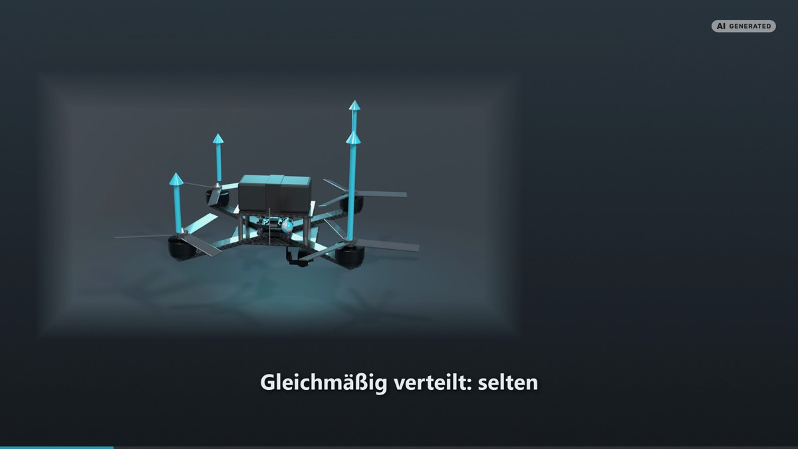
Das vorige Kapitel hat so getan, als verteile sich die Last gleichmäßig auf vier Motoren. Das tut sie fast nie. Eine Kamera hängt vorn, ein Gimbal hängt vorn und unten, und beides sitzt damit weit vor dem geometrischen Mittelpunkt des Copters. Der Schwerpunkt wandert nach vorn, und weil ein Multicopter waagerecht schweben will, müssen die vorderen Motoren dauerhaft mehr leisten als die hinteren.
Ein Rechenbeispiel mit angenommenen Zahlen zeigt, wie schnell das unbequem wird. Liegt die Schubverteilung zwischen Front und Heck bei 64,6 zu 35,4 Prozent, müssen die vorderen Motoren des Beispiel-Copters aus Kapitel 1 je 1.020 g tragen, die hinteren nur je 558 g (unsere Rechnung). Der vordere Motor arbeitet damit in einem ganz anderen Betriebspunkt als der hintere. Er verbraucht mehr, wird wärmer und hat weniger Reserve für Steuereingaben. Wandert der Akku nach hinten, bis die Verteilung bei 54 zu 46 Prozent liegt, leisten die Frontmotoren immer noch rund 17 Prozent mehr als die hinteren (unsere Rechnung).
Wichtig ist die richtige Deutung solcher Zahlen. Wiegt man einen Rumpf auf zwei Waagen, um den Schwerpunkt zu bestimmen, erhält man eine Auflagerverteilung. Das ist nicht dasselbe wie die Schubverteilung im Flug, auch wenn beide als Prozentpaar aussehen. Die Auflagerverteilung sagt nur, wo der Schwerpunkt entlang der Plattenlänge liegt. Die Schubverteilung ergibt sich erst aus dem Verhältnis von Schwerpunkt zu Motorpositionen. Wer beides verwechselt, hält einen kopflastigen Copter für ausgewogen.
Die wichtigste Erkenntnis aus dem Rechenbeispiel ist aber eine andere: Nutzlast lässt sich durch Verschieben leichter Bauteile kaum kompensieren. Am Beispiel-Copter verschiebt eine 36 g schwere Kamera, die um 100 mm nach hinten wandert, den Gesamtschwerpunkt um lediglich 1,1 mm. Die gesamte GPS-Baugruppe mit 60 g über 230 mm bringt 4,4 mm. Zum Vergleich: Ein Akku mit rund 1.100 g verschiebt ihn um 0,35 mm je Millimeter, den er selbst wandert (unsere Rechnung). Trimmen kann man nur mit dem schwersten Bauteil, und das ist fast immer der Akku. Kleine Bauteile hin und her zu schieben, ist verlorene Zeit.
Daraus folgt eine Reihenfolge: Erst die Nutzlast festlegen, dann den Akkuplatz konstruieren, nicht umgekehrt. Wer den Akkuhalter fertig baut und danach eine Kamera vorn anschraubt, hat keinen Freiheitsgrad mehr übrig. Ein Gimbal, der unter dem Copter hängt, sollte so weit wie baulich möglich hinter der Vorderkante sitzen, auch wenn das den nutzbaren Blickwinkel nach unten einschränkt.
3. Woher die Bildunruhe kommt
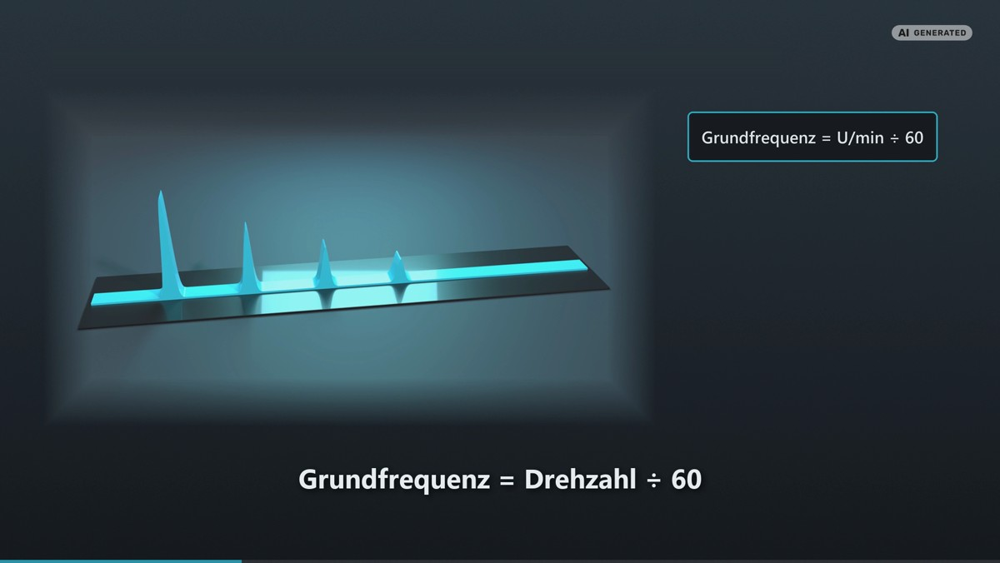
Bevor man über Stabilisierung redet, muss man sortieren, was genau stabilisiert werden soll. Ein unruhiges Copterbild hat zwei völlig verschiedene Ursachen, und sie werden mit völlig verschiedenen Mitteln bekämpft.
Erstens die Fluglage. Ein Multicopter fliegt vorwärts, indem er sich nach vorn neigt. Er gleicht Wind aus, indem er sich neigt. Jede Steuereingabe ist eine Lageänderung. Das sind langsame Bewegungen im Bereich von Bruchteilen einer Sekunde bis einigen Sekunden, und sie sind physikalisch unvermeidbar: ohne Neigung kein Vortrieb. Im Bild erscheinen sie als Kippen des Horizonts und als Wandern des Bildausschnitts.
Zweitens die Vibration. Motoren drehen, Propeller schlagen Luft, der Rahmen schwingt. Das sind schnelle, periodische Anregungen im Bereich von etwa hundert bis mehreren hundert Hertz. Im Bild erscheinen sie nicht als Kippen, sondern als Zittern, als Unschärfe und bei Kameras mit zeilenweisem Auslesen als wabernde Verzerrung (dazu Kapitel 8).
Die Frequenzen lassen sich benennen. Die Flugsoftware Betaflight leitet aus der Motordrehzahl die Grundfrequenz ab, indem sie die Drehzahl je Minute durch 60 teilt. Zusätzlich filtert sie deren Oberwellen: In der Voreinstellung laufen zwölf Kerbfilter je Achse, die „die ersten drei Oberwellen der Geräuschsignatur jedes Motors" abdecken.6 Bei einem Copter, dessen Motoren im Schwebeflug mit rund 5.000 Umdrehungen je Minute laufen, liegt die Grundfrequenz also bei rund 83 Hz (unsere Rechnung: 5.000 ÷ 60). Ein Dreiblattpropeller schlägt bei jeder Umdrehung dreimal Luft, die sogenannte Blattfolgefrequenz liegt damit bei rund 250 Hz (unsere Rechnung). Genau in diesem Bereich muss eine Dämpfung wirken.
Warum ist die Trennung so wichtig? Weil ein Gimbal die Vibration nicht wegnimmt und eine Dämpfung die Fluglage nicht ausgleicht. Ein Gimbal regelt Winkel. Er ist ein Lageregler mit einer Bandbreite, die weit unterhalb von 250 Hz liegt. Hochfrequente Vibration geht durch ihn hindurch oder regt seine eigene Mechanik an. Eine Schwingungsdämpfung wiederum ist ein Feder-Masse-System. Sie sperrt hohe Frequenzen, folgt aber langsamen Lageänderungen nahezu ungehindert. Wer einen Gimbal starr an einen vibrierenden Rahmen schraubt, bekommt ein zitterndes Bild mit geradem Horizont. Wer nur dämpft, bekommt ein ruhiges Bild, das sich bei jeder Kurve mitneigt.
Deshalb ist die Reihenfolge immer dieselbe: zuerst die Vibration an der Quelle reduzieren (ausgewuchtete Propeller, feste Motorverschraubung, steifer Rahmen), dann dämpfen, und erst dann über Lagestabilisierung reden. Ein Gimbal auf einem schlecht gewuchteten Copter ist teures Gewicht.
4. Schwingungsdämpfung, und warum weicher nicht besser ist
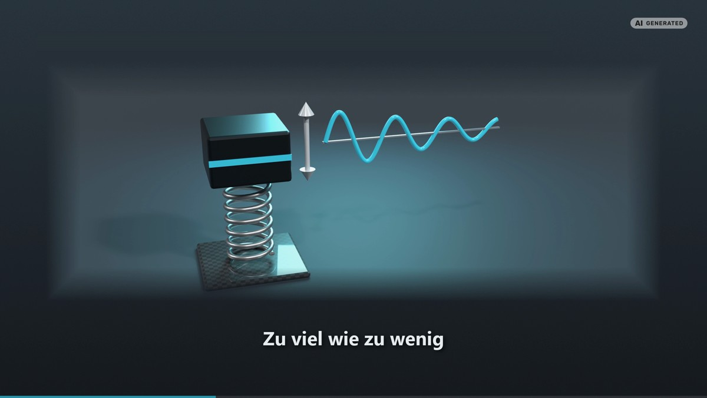
Vibration lässt sich messen, und zwar bevor sie das Bild ruiniert. Der Flight Controller misst sie bereits, weil seine eigene Lageregelung darunter leidet. ArduPilot nennt dafür klare Grenzwerte: Werte unter 30 m/s² sind „normalerweise akzeptabel", oberhalb davon treten Probleme auf, und über 60 m/s² gibt es „fast immer Probleme" mit Positions- oder Höhenhaltung.7 Zusätzlich zählt die Software sogenannte Clipping-Ereignisse, bei denen der Beschleunigungssensor in die Begrenzung läuft. Ideal sind null, „niedrige Zahlen (unter 100)" gelten noch als in Ordnung.7 Diese Werte gelten dem Flight Controller, nicht der Kamera, sind aber der beste verfügbare Indikator: ein Copter, dessen FC sauber liegt, hat auch für die Kamera brauchbare Verhältnisse.
Für die Dämpfung selbst gilt eine Regel, die häufig missverstanden wird. Die ArduPilot- Dokumentation formuliert sie unmissverständlich: „zu viel ist genauso schlecht wie zu wenig".8 Eine Dämpfung ist ein Feder-Masse-System, und ein Feder-Masse-System hat eine Eigenfrequenz. Liegt diese Eigenfrequenz zufällig in der Nähe der Anregung, verstärkt die Dämpfung die Schwingung, statt sie zu sperren. Eine weiche Aufhängung mit einer leichten Nutzlast hat eine niedrige Eigenfrequenz und beginnt bei langsamen Manövern zu schaukeln. Eine harte Aufhängung sperrt gar nichts.
Der entscheidende Zusammenhang ist deshalb die Abstimmung zwischen Dämpfungsmaterial und der Masse, die es tragen soll. Die Dokumentation weist ausdrücklich darauf hin, dass „die Menge und Art des Dämpfungsmediums sorgfältig auf das Gewicht (die Masse) des zu isolierenden Teils abgestimmt werden muss".8 Und sie nennt eine Falle für alle, die fertige Dämpfer kaufen. Um optimal zu wirken, sind „praktisch alle Standardlösungen für eine isolierte Masse ausgelegt, die mindestens das Fünf- bis Zehnfache eines durchschnittlichen Autopiloten wiegt".8 Fertige Gummipuffer aus dem Modellbauhandel sind also fast immer für schwerere Lasten gedacht, als man ihnen aufbürdet, und arbeiten deshalb im falschen Bereich.
An Materialien nennt die Dokumentation geschäumte Klebepads, Gelbänder, gedruckte Dämpfungsplattformen, O-Ring-Aufhängungen und Schaumstoff-Ohrstöpsel als praktikable Lösungen. Bei Gelen wird vor Versagen durch Hitze gewarnt.8 Und sie enthält einen unscheinbaren, aber nützlichen Hinweis: Man solle darauf achten, dass ein Spanngurt „das Bauteil nicht so fest niederhält, dass er die Dämpfungswirkung der Pads behindert".8 Genau das passiert regelmäßig: sauber gedämpft montiert, dann mit einem Klettband stramm festgezogen und damit die Dämpfung überbrückt.
Für Kameranutzlast heißt das: Die Dämpfung gehört zwischen Rahmen und Kamerahalter und muss auf das Gewicht genau dieser Kamera abgestimmt sein. Nichts darf sie kurzschließen, weder ein straffes Kabel noch ein Klettband oder eine zusätzliche Strebe „zur Sicherheit". Ein Kabel, das steif genug ist, Schwingung zu übertragen, ist ein Teil der Aufhängung, ob man es so plant oder nicht.
5. Der mechanische Gimbal
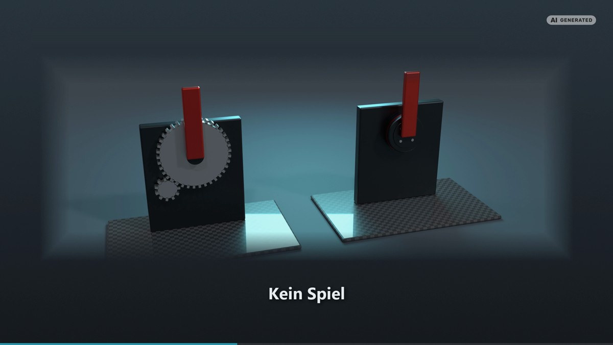
Ein Gimbal ist eine kardanische Aufhängung: Die Kamera sitzt in einem Rahmen, der sich um eine oder mehrere Achsen drehen kann. Motoren halten sie gegen die Bewegung des Copters in der gewünschten Lage. Die heute übliche Bauart nutzt bürstenlose Motoren im Direktantrieb (Fachwort: Brushless Gimbal), also ohne Getriebe zwischen Motor und Achse.
BaseCam Electronics, Hersteller der verbreiteten Gimbal-Steuerung SimpleBGC, beschreibt das Prinzip so: Jede Drehachse verläuft „durch den Schwerpunkt des Systems aus Kamera und Rahmen" und ist starr mit dem Motor verbunden.9 Dieser Satz ist die wichtigste Bauvorschrift überhaupt. Ein Gimbal muss ausbalanciert werden, und zwar so, dass die Kamera in jeder Lage von selbst stehen bleibt. Ist sie das nicht, muss der Motor dauerhaft ein Haltemoment aufbringen, zieht Strom, wird warm, und die Regelung verliert genau die Reserve, die sie für schnelle Störungen bräuchte. Wer eine Kamera tauscht und die Balance nicht neu einstellt, hat effektiv einen anderen Gimbal.
Die Regelung selbst arbeitet mit einer Lagesensorik direkt an der Kamera: Gyroskope und Beschleunigungssensoren sind „auf der Kameraplattform montiert" und liefern die Winkel, die ausgeregelt werden.9 Optional kommt ein zweiter Sensor am Rahmen hinzu, dessen Daten die Steuerung gleichzeitig auswertet, um genauer zu stabilisieren.9 Das ist ein wesentlicher Unterschied zur elektronischen Stabilisierung: Der Gimbal misst dort, wo die Kamera sitzt, und schließt den Regelkreis mechanisch.
Zwei bauartbedingte Vorteile ergeben sich daraus. Erstens gibt es im Direktantrieb „kein Spiel, wie es Zahnrädern oder Riemen eigen ist"9 Ein Getriebegimbal hat immer ein Losbrechmoment und ein Umkehrspiel, und beides sieht man im Bild. Zweitens braucht diese Bauart laut Hersteller „keine komplexen und teuren hochauflösenden Encoder für jede Achse", weil die kleine Sensorplatine auf der Kameraplattform genügt.9 Das erklärt, warum brauchbare Gimbals überhaupt bezahlbar geworden sind. In der Oberklasse werden Encoder trotzdem verbaut, weil sie die Regelgüte und das Verhalten beim Anfahren von Endlagen verbessern.
Wie gut das Ergebnis ist, geben Hersteller als Restwinkelfehler an. Kompakte Modelle für UAS-Einsatz nennen einen Winkelvibrationsbereich von ± 0,01° beim 3-Achsen-Modell2 und ± 0,02° beim 2-Achsen-Modell derselben Baureihe.10 Das sind Herstellerangaben, nachgemessen haben wir sie nicht. Als Größenordnung sagen sie aber Wesentliches: die Restbewegung liegt deutlich unter dem, was ein einzelnes Bildpixel bei üblichen Brennweiten abdeckt. Ein sauber gebauter und ausbalancierter Gimbal ist mechanisch dem Bild überlegen, das er trägt.
6. Zwei Achsen oder drei, und was die dritte kostet
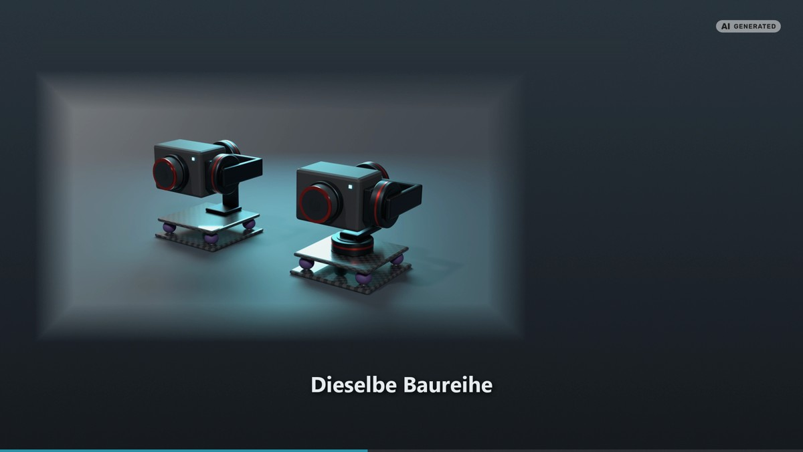
Das ist die Frage, um die es beim Bauen geht, und sie wird meistens falsch gestellt. „Drei Achsen sind besser als zwei" ist keine Antwort, sondern eine Preisangabe. Interessant ist, welchen Bildfehler jede Achse entfernt.
Die drei Achsen heißen Nick (Pitch, Blick nach oben und unten), Roll (Rollen, Kippen des Horizonts) und Gier (Yaw, Drehung um die Hochachse, also die Blickrichtung). Ihre Wirkung auf das Bild unterscheidet sich deutlich:
| Achse | Was sie im Bild entfernt | Nachträglich korrigierbar? |
|---|---|---|
| Roll | schiefer Horizont beim Kurvenflug | ja, aber mit Beschnitt |
| Nick | Auf- und Abwandern des Ausschnitts beim Beschleunigen | ja, aber mit Beschnitt |
| Gier | Wandern der Blickrichtung beim Drehen | nur eingeschränkt |
Nick und Roll sind die beiden Achsen, die den Bildinhalt innerhalb der Szene verschieben. Die Gierachse dagegen bestimmt, wohin die Kamera überhaupt schaut. Genau daraus folgt der oft übersehene Punkt: Für ein ruhiges Bild aus fester Blickrichtung braucht man die Gierachse nicht. Für eine Kamera, die unabhängig von der Flugrichtung ein Objekt verfolgen soll, braucht man sie zwingend.
Diese Einordnung steckt in den offenen Standards selbst. MAVLink ist das gemeinsame Protokoll, über das nahezu alle Flight Controller mit Zubehör und Bodenstation sprechen. Seine Spezifikation führt die Achsen als getrennt optionale Fähigkeiten eines Gimbals. Eigene Kennzeichen geben an, ob ein Gerät „das Drehen um die Roll-Achse", „um die Nick-Achse" beziehungsweise „um die Gier-Achse" unterstützt.11 Ein Gimbal mit zwei Achsen ist damit kein unvollständiges Gerät, sondern eine vorgesehene Bauform.
Noch deutlicher wird es beim Blick darauf, wie ein Gimbal angesteuert wird. Der
zentrale Befehl in ArduPilot heißt MAV_CMD_DO_GIMBAL_MANAGER_PITCHYAW und bewegt
den Gimbal „auf gewünschte Nick-/Gier-Winkel oder -Raten".12 Die
Roll-Achse taucht im Namen dieses Befehls überhaupt nicht auf, und das ist kein Versehen: In der
MAVLink-Spezifikation ist das Rollen als Stabilisierungs-Achse definiert. Das
entsprechende Kennzeichen beschreibt, den Rollwinkel „auf einen absoluten Winkel relativ zum
Horizont" festzuhalten, und hält ausdrücklich fest: „das ist im Allgemeinen die Voreinstellung
bei einem stabilisierenden Gimbal".11 Dieselbe Formulierung
verwendet die Spezifikation für die Nick-Achse.11
Roll und Nick halten das Bild ruhig, die Gierachse richtet es aus. Für ein reines Kamerabild aus der Flugrichtung ist die dritte Achse die mit dem geringsten Nutzen je Gramm.
Und die Gramm lassen sich beziffern, weil es Hersteller gibt, die dieselbe Baureihe in beiden Ausführungen anbieten. Bei einem kompakten UAS-Gimbal wiegt die 3-Achsen-Ausführung 240 g13, die 2-Achsen-Ausführung 180 g10, und beide tragen laut Datenblatt dieselbe Nutzlast von 400 g.1310 Die dritte Achse kostet hier also 60 g, ein Drittel mehr Eigengewicht (unsere Rechnung: 240 ÷ 180), ohne die Traglast zu erhöhen. Mit dem Ansatz aus Kapitel 1 kosten diese 60 g am Beispiel-Copter rund 3,6 Prozent Schwebeleistung (unsere Rechnung). Damit bezahlt man eine Funktion, die ein Bild aus fester Blickrichtung nicht ruhiger macht.
Die 2-Achsen-Ausführung hat dabei brauchbare Stellbereiche: Nick ± 127° und Roll ± 60°.10 Die Blickrichtung ändert man bei so einem Aufbau, indem man den ganzen Copter dreht. Für Filmaufnahmen aus der Bewegung ist das die natürlichere Bewegung. Für Inspektionsflüge, bei denen der Copter stehen bleiben und die Kamera schwenken soll, ist es ein echter Nachteil.
Vorsicht bei der Bezeichnung. „3-Achsen" auf der Verpackung heißt nicht
zwingend, dass alle drei Achsen aktiv geregelt werden. Manche Geräte führen eine Achse nur
mechanisch mit oder erlauben sie nur als Voreinstellung. Der verlässliche Test ist nicht das
Marketing, sondern das Datenblatt: Gibt es für jede Achse einen Stellbereich und einen
Motor? In der Flight-Controller-Konfiguration entspricht dem je Achse ein eigenes
Parameterpaar für Minimal- und Maximalwinkel, etwa MNT1_ROLL_MIN und
MNT1_ROLL_MAX, jeweils in Grad.14 Was dort keinen
sinnvollen Bereich hat, wird auch nicht geregelt.
7. Elektronische Stabilisierung
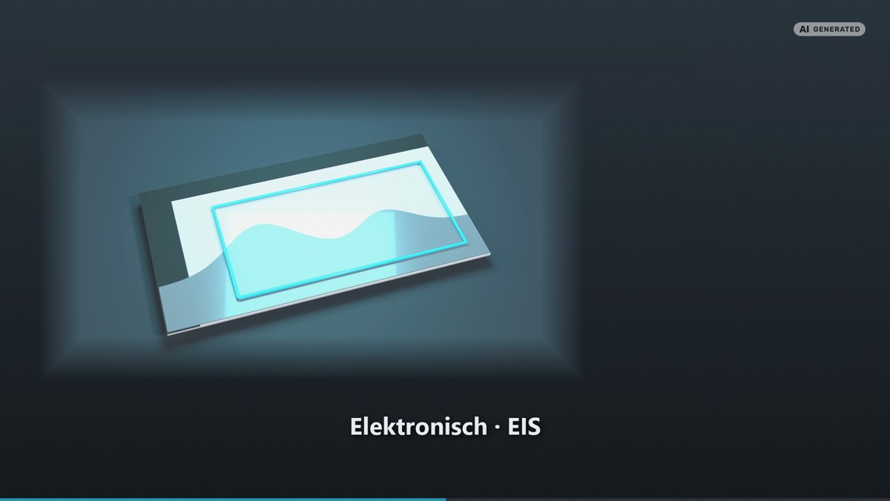
Die elektronische Bildstabilisierung (Fachwort: EIS, Electronic Image Stabilization) löst dasselbe Problem ohne bewegte Teile. Im Kern nimmt die Kamera ein größeres Bild auf, als sie ausgibt. Den ausgegebenen Ausschnitt verschiebt sie von Bild zu Bild so, dass die Bewegung herausfällt.
Ein Sensorhersteller beschreibt es knapp: EIS „beschneidet jedes einzelne Bild intelligent auf Basis von Bewegungssensordaten, um Bildunruhe zu reduzieren".15 Der entscheidende Halbsatz ist „auf Basis von Bewegungssensordaten": Moderne EIS rät die Bewegung nicht aus dem Bildinhalt, sondern liest sie aus einem Gyroskop. Damit funktioniert sie auch dort, wo Bildinhalt-basierte Verfahren scheitern: bei gleichförmigen Flächen, bei Nacht, bei bewegten Objekten im Bild.
Der Preis ist immer derselbe: Bildwinkel. Was am Rand für die Verschiebung reserviert wird, steht als Bild nicht mehr zur Verfügung. Eine Untersuchung zu gyroskopgestützter Videostabilisierung beschreibt genau dieses Vorgehen: Nach dem Ausgleich entstehen „schwarze Bereiche nahe den Bildrändern", die „durch Beschneiden entfernt werden" können. Als einfache Lösung nennt sie, „den Beschnittfaktor größer zu wählen als die maximal erwartete Bildbewegung".16 Je unruhiger der Flug, desto mehr Rand muss man opfern.
Genau daraus ergibt sich die Kernabwägung dieses Ratgebers. Ein Gimbal kostet Gewicht und Strom, aber keinen Bildwinkel. EIS kostet Bildwinkel, aber kein Gewicht und kaum Strom. Bei einem Copter, dessen Nutzlastbudget knapp ist, ist das fast immer die günstigere Währung, zumal ein Weitwinkelobjektiv reichlich Reserve im Bildwinkel hat.
Eine zweite Eigenschaft von EIS wird oft übersehen: Sie arbeitet rückwärts. Die Bewegung wird gemessen und danach im Bild kompensiert. Es gibt keinen mechanischen Regelkreis, der zu langsam sein könnte. Dafür hat sie eine andere Schwäche. Die Kamerarotation wird durch Integration der Gyroskopmessungen bestimmt, und diese Messung enthält systematisch Drift und Rauschen.16 Über kurze Zeiträume ist das unerheblich. Über lange Aufnahmen wandert ein rein gyroskopgestützt gehaltener Horizont langsam weg, wenn ihn nicht ein Beschleunigungssensor nachführt. Ein mechanischer Gimbal hat dasselbe Problem und löst es genauso: mit Gyroskop und Beschleunigungssensor auf der Kameraplattform.9
Für den Selbstbau interessant ist, dass EIS nicht in der Kamera stattfinden muss. Freie Werkzeuge stabilisieren Videos nachträglich am Rechner „unter Verwendung von Bewegungsdaten eines Gyroskops und optional eines Beschleunigungssensors".17 Liefert die Kamera selbst keine Bewegungsdaten, lassen sich diese von einem separaten Gerät aufzeichnen. Ausdrücklich genannt wird der Flight Controller.17 Damit wird aus einer Blackbox-Aufzeichnung, die viele für die Fehlersuche mitschreiben, die Datengrundlage der Bildstabilisierung. Diese Werkzeuge bieten außerdem eine „adaptive Zoomstufe (dynamischer Beschnitt)" mit einstellbarer Grenze17, beschneiden also nur so viel, wie die jeweilige Passage braucht.
Der Nachteil dieses Weges ist ehrlich zu benennen: Er wirkt erst nach dem Flug. Das Livebild in der Brille bleibt unruhig, und wer nach dem Bild fliegt, fliegt nach dem unstabilisierten.
8. Rolling Shutter: die Grenze, an der EIS aufhört
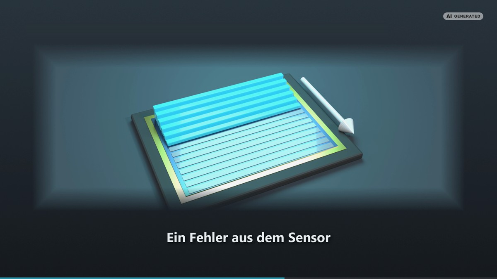
Es gibt einen Bildfehler, bei dem der mechanische Gimbal dem elektronischen Verfahren überlegen ist, und er hat mit der Bauart heutiger Bildsensoren zu tun.
Fast alle Kameras in Coptern nutzen CMOS-Sensoren, die das Bild Zeile für Zeile auslesen (Fachwort: Rolling Shutter). Teledyne Vision Solutions, ein Hersteller von Kameras für die industrielle Bildverarbeitung, beschreibt die Folge so: Solche Sensoren „verzerren Bilder bewegter Objekte, weil sie immer nur eine Zeile ihres Arrays auf einmal auslesen". Bis sie die nächste Zeile lesen, „hat sich das Objekt bewegt".18
Das Gegenstück heißt Global Shutter. Er „startet und stoppt die Belichtung aller Pixel eines Arrays gleichzeitig, elektronisch gesteuert".18
Warum ist das für Copter so relevant? Weil ein vibrierender Copter die Kamera genau während dieses zeilenweisen Auslesens bewegt. Jede Bildzeile wird aus einer minimal anderen Kameralage aufgenommen. Das Ergebnis ist kein verschobenes, sondern ein in sich verzerrtes Bild: gerade Objekte werden wellig, senkrechte Kanten wackeln. In der FPV-Szene heißt der Effekt Jello, nach dem Wackelpudding.
Und hier liegt der grundsätzliche Unterschied. Eine Verschiebung des Bildausschnitts kann eine Verzerrung innerhalb des Bildes nicht rückgängig machen. Einfache EIS verschiebt den Ausschnitt und lässt das Wabern stehen. Anspruchsvollere Verfahren korrigieren den Rolling Shutter ausdrücklich mit: freie Stabilisierungswerkzeuge führen „Rolling-Shutter-Korrektur" als eigenes Merkmal.17 Das funktioniert, weil man mit bekannter Auslesezeit und bekannter Drehrate jede Zeile einzeln zurückrechnen kann. Es bleibt aber eine Rekonstruktion aus bereits verzerrten Daten.
Ein mechanischer Gimbal hat dieses Problem gar nicht erst, weil er die Kamera während der Belichtung ruhig hält. Es wird nichts zurückgerechnet, weil nichts verzerrt wurde. Wer lange Brennweiten fliegt oder Aufnahmen für Vermessung und Auswertung macht, wo geometrische Treue zählt, hat hier ein sachliches Argument für den Gimbal, das sich nicht mit Software ausgleichen lässt.
Der praktische Hebel für alle anderen bleibt Kapitel 3 und 4: Jello ist zuerst ein Vibrationsproblem. Ausgewuchtete Propeller und eine passende Dämpfung entfernen die Ursache. Jede Form von Stabilisierung behandelt nur die Folge.
9. Gimbal gegen EIS: der ehrliche Vergleich
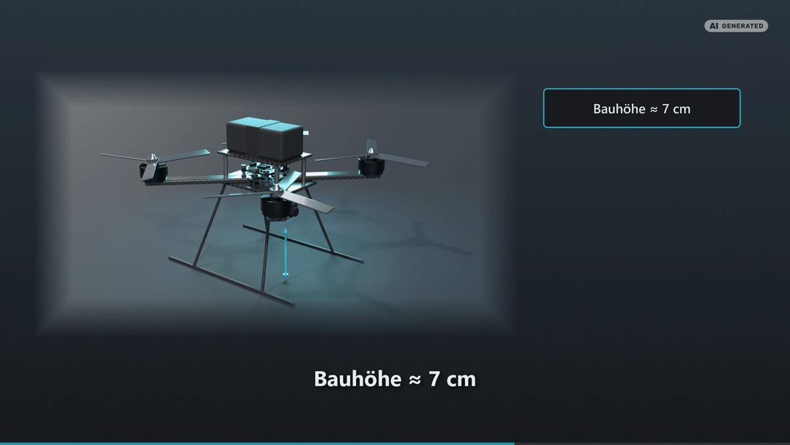
Stellen wir die belegten Zahlen nebeneinander. Die Gimbal-Spalte nutzt einen kompakten 3-Achsen-Gimbal für UAS-Einsatz als Beispiel. Die Werte sind Herstellerangaben, die wir nicht nachgemessen haben.
| Kriterium | Mechanischer Gimbal | Elektronische Stabilisierung |
|---|---|---|
| Zusatzgewicht | 164 g (3 Achsen, kompakt)2 bis 240 g13 | keines |
| Stromaufnahme | 4,5–6 W im Mittel, 12 W Spitze2 | keine nennenswerte |
| Bildwinkel | voll erhalten | Beschnitt am Rand nötig16 |
| Rolling Shutter / Jello | entsteht gar nicht erst | nur rechnerisch korrigierbar17 |
| Blickrichtung schwenkbar | ja, mit Gierachse | nein |
| Bauhöhe unter dem Copter | erheblich, landeabhängig | keine |
| Ausfallverhalten | Mechanik kann klemmen oder brechen | Software, kein mechanischer Ausfall |
| Balance nötig | ja, bei jedem Kameratausch9 | nein |
| Wirkt im Livebild | ja | je nach Kamera; Nachbearbeitung erst später17 |
Die Zeile, die am häufigsten unterschätzt wird, ist die Bauhöhe. Ein Gimbal hängt unter dem Copter und braucht Bodenfreiheit. Kompakte Modelle bauen rund 7 cm hoch.19 Das bedeutet höhere Landebeine, mehr Hebel beim Aufsetzen, ein größeres Transportmaß und ein exponiertes Bauteil bei jeder harten Landung. Wer ein Fluggerät baut, das auch mal auf unebenem Gelände abgesetzt wird, kauft mit dem Gimbal auch ein Fahrwerksproblem.
Die zweite unterschätzte Zeile ist die Stromaufnahme. 4,5 bis 6 W im Mittel klingen neben mehreren hundert Watt Antriebsleistung nach nichts. Sie fließen aber unabhängig vom Flugzustand, auch am Boden bei laufendem System, und sie kommen zum Mehrverbrauch durch das Gewicht noch hinzu.
Die Einordnung: Für einen Copter, der ein Bild aus der Flugrichtung liefern soll, gewinnt die elektronische Stabilisierung deutlich. Sie kostet die Währung (Bildwinkel), von der ein Weitwinkelaufbau reichlich hat, und nicht die (Gewicht und Strom), von der er zu wenig hat. Sobald die Blickrichtung unabhängig vom Flugweg sein muss, sobald lange Brennweiten im Spiel sind oder geometrische Treue gefordert ist, dreht sich das Verhältnis, und der Gimbal ist ohne Alternative.
10. Sensorik jenseits der Kamera
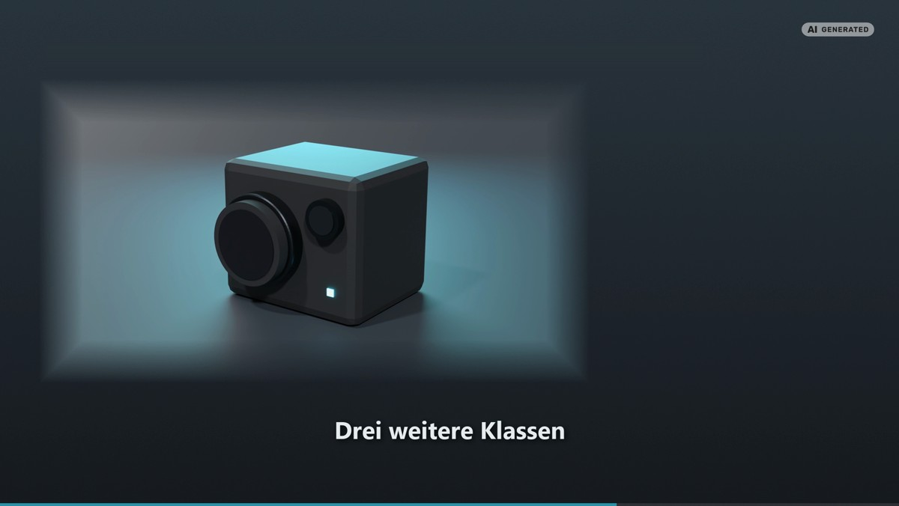
Nutzlast ist nicht nur Kamera. Drei Klassen begegnen einem regelmäßig, und alle drei haben Anforderungen, die über das Gewicht hinausgehen.
Wärmebild. Thermalmodule für UAS sind leicht geworden: Ein kombiniertes Modul mit 640×512 Thermalauflösung und einer 64-Megapixel-Sichtkamera wiegt 56 g und nimmt im stationären Betrieb rund 1,8 W auf.3 Das Gewicht ist damit selten das Problem. Zwei andere Dinge sind es. Ein Wärmebildmodul liefert einen zweiten Videostrom, der übertragen oder aufgezeichnet werden muss. Und ein radiometrisches Modul, also eines, das echte Temperaturen misst statt nur Falschfarben zu zeigen, verlangt eine ungestörte Sicht ohne Fensterscheibe davor. Was ein solches Modul misst und warum der Emissionsgrad über die angezeigte Temperatur entscheidet, steht im Ratgeber zu den Kamerasystemen.
Entfernungsmessung nach unten. Laser- und Ultraschallsensoren melden dem Flight Controller den Abstand zum Boden. ArduPilot nutzt nach unten gerichtete Entfernungsmesser „automatisch in Flugmodi mit Höhenregelung, etwa Altitude Hold, Loiter und PosHold".20 Weitere Anwendungen sind Präzisionslandung, Geländefolgeflug und Hindernisvermeidung. Die Anbindung läuft je nach Gerät über I²C, analog, serielle Schnittstellen oder DroneCAN.20 Für Kameraflüge ist das mehr als Komfort: Ein Copter, der seine Höhe über Grund kennt, hält Aufnahmeabstände konstant.
Hochgenaue Positionierung. Für Vermessung reicht normales GNSS nicht. Mit zwei GNSS-Empfängern lässt sich zusätzlich die Ausrichtung bestimmen (Fachwort: Moving Baseline), was laut ArduPilot „die Notwendigkeit eines Kompasses beseitigt, der unter magnetischer Störung leiden kann".21 Das ist gerade auf Carbon-Rahmen mit starken Motorströmen ein echtes Argument, siehe auch unseren Ratgeber zu Funk und GPS. Die Anforderung ist handfest: „Zwei Antennen sind in jedem Fall erforderlich", und sie „müssen am Fluggerät mindestens 30 cm voneinander entfernt sein".21 An einem 13-Zoll-Copter ist das eine Konstruktionsaufgabe, nicht nur eine Beschaffungsentscheidung. Zur Kontrolle nennt die Dokumentation ein klares Kriterium: Der zweite Empfänger muss den Fixtyp 6 (Fixed RTK) melden. Außerdem muss der gemeldete Abstand zwischen den Modulen zum gemessenen „innerhalb von 20 Prozent" passen.21
Allen drei Klassen gemeinsam ist ein Punkt, den man bei der Planung leicht übersieht. Sie brauchen nicht nur Platz und Strom, sondern Schnittstellen am Flight Controller, und die sind an kompakten Stacks knapp. Wer Gimbal, Entfernungsmesser und zweiten GNSS-Empfänger zusammen plant, sollte die freien seriellen Anschlüsse zählen, bevor er bestellt.
11. Wie ein Gimbal an den Flight Controller kommt
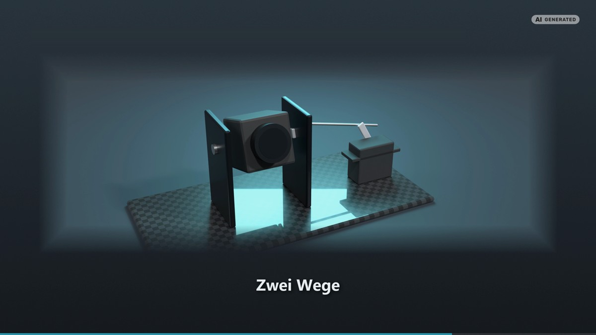
Es gibt zwei verschiedene Wege, einen Gimbal anzusteuern, und der Unterschied entscheidet darüber, was später möglich ist.
Weg eins: der Flight Controller stabilisiert selbst. Bei einfachen, servogetriebenen Gimbals übernimmt die Flugsoftware die Regelung und gibt Winkel als PWM-Signale aus. ArduPilot unterscheidet das ausdrücklich von der zweiten Bauart: Unterstützt werden „bürstenlose Direktantriebs-Gimbals, die eigene Stabilisierungsregler besitzen, und die einfacheren servogetriebenen Gimbals, bei denen ArduPilot die Stabilisierung übernimmt".22 Der Vorteil ist Einfachheit und Preis. Der Nachteil ist, dass die Regelgüte an der Rechenzeit und der Sensorlage des Flight Controllers hängt, der nicht auf der Kamera sitzt.
Weg zwei: der Gimbal regelt selbst, der Flight Controller richtet ihn nur aus. Das ist die heute übliche Bauart und der Grund, warum ein Protokoll gebraucht wird. MAVLink trennt dafür zwei Rollen. Das Gimbal Device ist „die eigentliche Hardware und Low-Level-Software". Der Gimbal Manager ist die Software, die „Befehle aus mehreren Quellen entflicht und die Fähigkeiten des Geräts abstrahiert".23 Der Manager hat dabei „eine 1:1-Beziehung zu einem bestimmten Gimbal Device und ist die einzige Partei im MAVLink-Netz, die dieses Gerät direkt kommandieren darf".23
Diese Trennung klingt akademisch, löst aber ein reales Problem: Ohne sie würden Fernsteuerung und Bodenstation gleichzeitig widersprüchliche Befehle an denselben Gimbal schicken. PX4 setzt dasselbe Modell um und arbeitet dabei „als Gimbal Manager", der hochrangige MAVLink- Befehle entgegennimmt und für das Gerät übersetzt.24 Konfiguriert wird getrennt nach Eingang (woher die Befehle kommen: Fernsteuerung, Bodenstation oder automatische Umschaltung) und Ausgang (wie mit dem Gimbal gesprochen wird).24
Für den Aufbau heißt das: Ein Gimbal, der das MAVLink-Gimbal-Protokoll spricht, hängt an einem freien seriellen Anschluss und ist danach über die Bodenstation, die Fernsteuerung und über Missionsbefehle erreichbar. Kompakte UAS-Gimbals geben dafür als Schnittstellen typischerweise „USB 2.0, UART, SBus" an und weisen die Unterstützung des Gimbal-MAVLink-Protokolls ausdrücklich aus.2 Ein Gimbal, der nur PWM versteht, bleibt auf das beschränkt, was sich über einen Kanal der Fernsteuerung einstellen lässt.
Was dadurch möglich wird, geht über das Schwenken hinaus. ArduPilot kennt für den Gimbal
unter anderem Zielmodi, die auf einen geografischen Punkt zeigen
(MAV_CMD_DO_SET_ROI_LOCATION) oder einem anderen Fluggerät folgen
(MAV_CMD_DO_SET_ROI_SYSID).12 Ab Version 4.5 wechselt
die Software zudem „automatisch in den RC-Zielmodus, sobald der Pilot einen konfigurierten
Roll-/Nick-/Gier-Eingang bewegt".14 Für eine Kamera, die während
eines automatischen Fluges ein festes Objekt im Blick behalten soll, ist das der Hauptgrund
für einen protokollfähigen Gimbal.
12. Recht: Gewicht und Kamera ändern die Kategorie
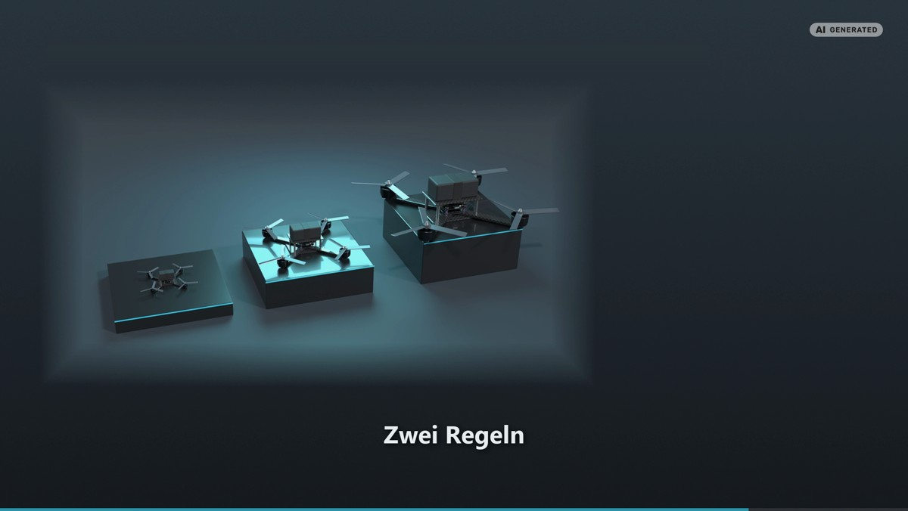
Nutzlast ist nicht nur ein technisches, sondern ein rechtliches Thema, und dieser Teil wird beim Bauen regelmäßig vergessen. Zwei Regeln greifen unabhängig voneinander.
Erstens das Gewicht. Die europäischen Regeln teilen die offene Kategorie in drei Unterkategorien mit unterschiedlichen Startmassen. Das Luftfahrt-Bundesamt (LBA), die deutsche Aufsichtsbehörde, nennt für die Unterkategorie A1 „UAS mit einer höchstzulässigen Startmasse von unter 900 g". Für A2 gilt „UAS mit einer höchstzulässigen Startmasse bis zu 4 kg", für A3 „UAS von weniger als 25 kg Höchstabflugmasse".25 Mit den Klassenkennzeichen der EU korrespondiert das so: C0 unter 250 g, C1 unter 900 g, C2 unter 4 kg, C3 und C4 unter 25 kg.26
Für die Praxis ist die relevante Zahl die Startmasse, nicht das Leergewicht. Nutzlast zählt mit. Ein Copter, der leer bei 3,8 kg liegt, ist mit einem 240-g-Gimbal über der 4-kg-Grenze und wechselt damit die Unterkategorie. Beim Beispiel-Copter aus Kapitel 1 mit rund 3,2 kg ist der Abstand komfortabler, aber endlich. Gut 800 g trennen ihn von der Grenze, und die sind bei schwerer Nutzlast schneller aufgebraucht, als es klingt.
Die Unterkategorien unterscheiden sich nicht nur im Papierkram, sondern in dem, was man fliegen darf. In A2 dürfen Drohnen „horizontal bis zu 30 m an unbeteiligte Personen herangeflogen werden", im Langsamflugmodus „bis auf 5 m". In A3 ist ein „Mindestabstand von 150 m zu Wohn-, Gewerbe-, Industrie- oder Erholungsgebieten" einzuhalten.25 Für A2 wird ein EU-Fernpiloten-Zeugnis verlangt, für A1 und A3 ein Online-Lehrgang mit bestandener Online-Theorieprüfung.25
Zweitens die Kamera selbst. Und das ist die Regel, die viele überrascht: Die Registrierungspflicht als UAS-Betreiber greift, „wenn das UAS eine Startmasse ab 250 g besitzt oder einen Sensor zur Erfassung personenbezogener Daten (z. B. eine Kamera) besitzt".27 Das „oder" ist entscheidend: Eine Kamera macht registrierungspflichtig, unabhängig vom Gewicht. Auch ein 80-Gramm-Copter mit Kamera fällt darunter.
Dieselbe Logik taucht bei den Überflugregeln wieder auf. Der Flug über Wohngrundstücke ist nur unter engen Bedingungen zulässig. Eine davon lautet, dass das Gerät unter 250 g wiegt und „über keine Kamera oder Sensoren zur Aufzeichnung von optischen, akustischen oder Funksignalen verfügt".27 Wer also einen leichten Copter baut, um Auflagen zu vermeiden, verliert diesen Vorteil in dem Moment, in dem eine Kamera dazukommt.
Diese Zusammenfassung ersetzt keine Rechtsberatung. Die Regeln ändern sich, und für den konkreten Einsatz gelten zusätzlich örtliche Beschränkungen (Naturschutz, Flugverbotszonen, Landesrecht) sowie das Datenschutzrecht. Maßgeblich sind immer die aktuellen Veröffentlichungen von LBA und EASA.
13. Der Entscheidungsweg
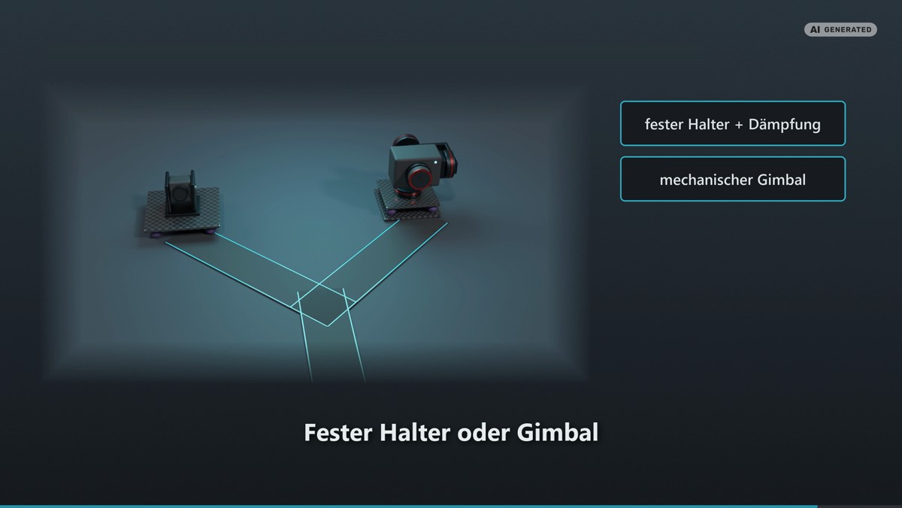
Am Ende steht eine Entscheidung, und sie folgt einer festen Reihe von Fragen. Wer sie der Reihe nach beantwortet, landet entweder beim festen Halter mit Dämpfung oder beim mechanischen Gimbal.
Ohne Gimbal geht es, wenn drei Punkte zusammenkommen. Die Kamera schaut in Flugrichtung, das Nutzlastbudget ist knapp, und das Fluggerät wird auch auf unebenem Gelände abgesetzt. Dann ist ein fester Kamerahalter mit sauberer Dämpfung und elektronischer Stabilisierung meist die bessere Wahl. Am Beispiel-Copter aus Kapitel 1 kosten Gimbal und Wärmebildmodul rund 13 Prozent Schwebeleistung (unsere Rechnung). Und Kapitel 2 zeigt, wie wenig sich zusätzliches Frontgewicht mit leichten Bauteilen austrimmen lässt.
An einem mechanischen Gimbal führt kein Weg vorbei, sobald eine dieser Bedingungen zutrifft:
- Die Blickrichtung muss unabhängig vom Flugweg sein, etwa beim Umfliegen und Betrachten eines Objekts. Dann braucht es die Gierachse, und dann sind es drei Achsen.
- Es kommt eine längere Brennweite zum Einsatz. Jeder Winkelfehler wird mit der Brennweite multipliziert, und der Bildwinkelverlust durch elektronischen Beschnitt tut bei einem engen Bildwinkel richtig weh.
- Die Aufnahmen sollen ausgewertet werden, nicht angeschaut. Für Vermessung zählt geometrische Treue, und ein rückgerechneter Rolling Shutter ist eine Rekonstruktion, kein Messwert.
- Ein zweiter Sensorstrom, etwa Wärmebild, soll mit dem Sichtbild deckungsgleich bleiben.
Die Reihenfolge beim Bauen:
- Nutzlast zuerst festlegen, mit Gewicht und Einbauort, denn sie bestimmt den Akkuplatz (Kapitel 2).
- Schwebeleistung nachrechnen mit der Prüfstandstabelle des Motors, nicht mit dem Maximalschub (Kapitel 1).
- Vibration messen, bevor irgendetwas stabilisiert wird: unter 30 m/s², Clipping möglichst null (Kapitel 4).
- Dämpfung auf die tatsächliche Nutzlastmasse abstimmen und sicherstellen, dass kein Kabel und kein Gurt sie überbrückt.
- Erst dann entscheiden, ob mechanisch oder elektronisch stabilisiert wird.
- Startmasse gegen die Kategoriegrenze prüfen und die Registrierung nicht vergessen, sobald eine Kamera an Bord ist (Kapitel 12).
Kleine Gimbals für FPV-Kameras findest du bei unserem Partner FPV24. Caddx, ein Hersteller von FPV-Kameras und Zubehör, bietet dieselbe Baureihe mit zwei und mit drei Achsen an. Daran lässt sich Kapitel 6 an echten Teilen nachvollziehen: Der GM2 mit Nick- und Rollachse wiegt 30 g, der GM3 V2 mit zusätzlicher Gierachse 48 g.2829 Der GM2 passt zu Kameras im 19-Millimeter-Format.28 Der GM3 V2 ist für Kameras von Walksnail gebaut, einem Hersteller digitaler FPV-Videosysteme, und lässt sich unter anderem über MAVLink ansteuern.29
➜ Caddx GM2 (2 Achsen, 30 g, Steuerung über PWM oder UART) bei FPV24 ansehen (Anzeige)
➜ Caddx GM3 V2 (3 Achsen, 48 g, Steuerung unter anderem über MAVLink) bei FPV24 ansehen (Anzeige)
Wie ein Aufbau mit konkreten Teilen aussieht, zeigen die Teilelisten für den 13-Zoll-Build und den 10-Zoll-Build. Wenn du bei der Auslegung deiner Nutzlast unsicher bist oder eine Zweitmeinung zu Schwerpunkt und Leistungsbedarf brauchst: Schreib uns, wir schauen gern drauf.
Dieser Ratgeber ersetzt keine individuelle technische Prüfung. Alle Angaben ohne Gewähr. Wo wir gerechnet statt gemessen haben, steht es ausdrücklich dabei. Die Quellen wurden im August 2026 abgerufen und im November 2026 erneut geprüft.
Quellenangaben
- T-Motor, „MN4012 KV400". Prüfstandstabelle bei 22,2 V mit Propeller 13×4.4: Schub, Strom, Leistung und Effizienz von 50 bis 100 Prozent Gas; Motormaße und Gewicht: store.tmotor.com: MN4012 KV400
- Gremsy, „G-Hadron Specification". Gimbalgewicht 164 g, drei Achsen, Winkelvibration ± 0,01°, Stellbereiche, Leistungsaufnahme 4,5–6 W im Mittel und 12 W Spitze, Schnittstellen USB 2.0 / UART / SBus und MAVLink-Gimbal-Protokoll: docs.gremsy.com: G-Hadron
- Teledyne FLIR OEM, „Hadron 640 Series". Modulgewicht 56 g, Leistungsaufnahme 1,8 W, Thermalauflösung 640×512, Sichtkamera 64 MP: oem.flir.com: Hadron 640
- ArduPilot, „Setting Hover Throttle".
MOT_THST_HOVERliegt „üblicherweise zwischen 0,2 und 0,6", niedriger bei hohem Leistungsgewicht: ardupilot.org: Hover Throttle - ArduPilot, „Setting the Aircraft Up for Tuning". Startwert für
MOT_THST_HOVER: „0,25 oder unterhalb des erwarteten tatsächlichen Schwebeschub-Prozentsatzes": ardupilot.org: Setting Up for Tuning - Betaflight, „DShot RPM Filtering". Motordrehzahl über bidirektionales DShot, zwölf Kerbfilter je Achse, erste drei Oberwellen je Motor, Empfehlung 4k/4k: betaflight.com: DShot RPM Filtering
- ArduPilot, „Measuring Vibration". Grenzwerte: unter 30 m/s² akzeptabel, über 60 m/s² fast immer Probleme mit Positions- und Höhenhaltung; Clipping ideal null, unter 100 vertretbar: ardupilot.org: Measuring Vibration
- ArduPilot, „Vibration Damping". „Zu viel ist genauso schlecht wie zu wenig"; Dämpfungsmedium auf die zu isolierende Masse abstimmen; Standardlösungen sind für das Fünf- bis Zehnfache eines Autopilotengewichts ausgelegt; Materialien; Warnung vor überbrückenden Spanngurten: ardupilot.org: Vibration Damping
- BaseCam Electronics, „SimpleBGC". Drehachsen durch den Schwerpunkt des Systems aus Kamera und Rahmen, IMU auf der Kameraplattform, optionale Rahmen-IMU, kein Spiel wie bei Zahnrädern oder Riemen, keine teuren Encoder je Achse nötig: basecamelectronics.com: SimpleBGC
- Gremsy, „Mio Two-Axis Specification". Gimbalgewicht 180 g, Traglast 400 g, Winkelvibration ± 0,02°, Stellbereiche Nick ± 127° und Roll ± 60°, Stromaufnahme, MAVLink-Gimbal-Protokoll: docs.gremsy.com: Mio Two-Axis
- MAVLink, „common.xml" (Nachrichtendefinitionen).
GIMBAL_DEVICE_CAP_FLAGSmit getrennten Kennzeichen für Roll-, Nick- und Gier-Achse;GIMBAL_DEVICE_FLAGSmitROLL_LOCKundPITCH_LOCKals Voreinstellung eines stabilisierenden Gimbals: github.com/mavlink: common.xml - ArduPilot (Dev), „Control a Gimbal / Camera Mount". Befehlsübersicht,
MAV_CMD_DO_GIMBAL_MANAGER_PITCHYAWfür Nick- und Gierwinkel oder -raten,MAV_CMD_DO_SET_ROI_LOCATIONundMAV_CMD_DO_SET_ROI_SYSID: ardupilot.org/dev: MAVLink Gimbal Mount - Gremsy, „Mio Specification". Gimbalgewicht 240 g, maximale Traglast 400 g, Eingangsspannung, Schnittstellen: docs.gremsy.com: Mio
- ArduPilot, „Mount Targeting". Zielmodi des Gimbals, automatischer Wechsel in den
RC-Zielmodus ab Version 4.5, Winkelgrenzen je Achse über
MNT1_ROLL_MIN/MNT1_ROLL_MAXund die entsprechenden Nick- und Gier-Parameter: ardupilot.org: Mount Targeting - TDK InvenSense, „Image Stabilization". Abgrenzung optischer und elektronischer Stabilisierung; EIS „beschneidet jedes einzelne Bild intelligent auf Basis von Bewegungssensordaten": invensense.tdk.com: Image Stabilization
- Sensors (MDPI) / PMC, „Gyroscope-Based Video Stabilization for Electro-Optical Long-Range Surveillance Systems". Schwarze Randbereiche nach dem Ausgleich und deren Entfernung durch Beschnitt, Beschnittfaktor größer als die maximal erwartete Bildbewegung, Integration der Gyroskopmessungen mit Drift und Rauschen: pmc.ncbi.nlm.nih.gov: Gyroscope-Based Video Stabilization
- Gyroflow. Stabilisierung mit Bewegungsdaten aus Gyroskop und optional Beschleunigungssensor, Rolling-Shutter-Korrektur, adaptiver dynamischer Beschnitt mit Zoomgrenze, Bewegungsdaten wahlweise aus dem Flight Controller: gyroflow.xyz
- Teledyne Vision Solutions, „Global Shutter Imaging". Rolling-Shutter-Sensoren lesen jeweils nur eine Zeile aus, das Objekt bewegt sich zwischenzeitlich; Global Shutter startet und stoppt die Belichtung aller Pixel gleichzeitig: teledynevisionsolutions.com: Global Shutter Imaging
- SIYI, „A8 mini". Kompakte 3-Achsen-Gimbalkamera als Größenvergleich: Gewicht 95 g, Abmessungen 55 × 55 × 70 mm: siyi.biz: A8 mini, Spezifikation
- ArduPilot, „Rangefinders (Landing Page)". Bauarten (Lidar, Sonar, Radar, Tiefenkameras), automatische Nutzung in höhengeregelten Flugmodi, Präzisionslandung, Geländefolge und Hindernisvermeidung, Anbindung über I²C, analog, seriell oder DroneCAN: ardupilot.org: Rangefinders
- ArduPilot, „GPS for Yaw (Moving Baseline)". Ausrichtungsbestimmung mit zwei GNSS-Empfängern statt Kompass, zwei Antennen mit mindestens 30 cm Abstand, Prüfkriterium Fixtyp 6 und Abstandsabgleich innerhalb von 20 Prozent: ardupilot.org: GPS for Yaw
- ArduPilot, „Cameras and Gimbals". Unterscheidung zwischen bürstenlosen Direktantriebs-Gimbals mit eigenem Stabilisierungsregler und servogetriebenen Gimbals, bei denen ArduPilot stabilisiert; Unterstützung von bis zu drei Achsen; Ansteuerung über serielle Schnittstellen, PWM oder SBUS: ardupilot.org: Cameras and Gimbals
- MAVLink, „Gimbal Protocol v2". Trennung von Gimbal Device und Gimbal Manager, 1:1-Beziehung und Alleinzuständigkeit des Managers für das Gerät, Nachrichtenübersicht: mavlink.io: Gimbal Protocol v2
- PX4, „Gimbal Control". PX4 als Gimbal Manager, Trennung von Eingangs- und
Ausgangsmethode (
MNT_MODE_IN,MNT_MODE_OUT), MAVLink-Gimbal- Protokoll v2 als empfohlener Weg, alternativ PWM-Ausgänge für Roll, Nick und Gier: docs.px4.io: Gimbal Control - Luftfahrt-Bundesamt, „Anforderungen an Fernpiloten für den Betrieb eines UAS in der offenen Kategorie". Startmassen der Unterkategorien A1 (unter 900 g), A2 (bis 4 kg) und A3 (unter 25 kg), Abstandsregeln 30 m / 5 m / 150 m, geforderte Kompetenznachweise: lba.de: Anforderungen offene Kategorie
- EASA, „Open category (civil drones)". Klassenkennzeichen C0 bis C4 mit den zugehörigen Startmassen und die Zuordnung zu den Unterkategorien A1, A2 und A3: easa.europa.eu: Open Category
- Luftfahrt-Bundesamt, „FAQ Allgemein (Drohnen)". Registrierungspflicht ab 250 g Startmasse oder bei einem Sensor zur Erfassung personenbezogener Daten, Bedingungen für den Überflug von Wohngrundstücken: lba.de: FAQ Drohnen
- FPV24, „Caddx GM2 FPV Kamera Gimbal Stabilisator Headtracking". Zwei Achsen, Rotationsbereich Nick ± 120° und Roll ± 60°, Gewicht 30 g, Steuerung PWM/UART, Leistungsaufnahme 1,2 W, kompatibel mit 19-mm-Kameras: fpv24.com, Caddx GM2
- FPV24, „Caddx GM3 V2 FPV Kamera Gimbal Stabilisator Headtracking". Drei Achsen (Nick, Roll, Gier), Gewicht 48 g, Steuerung über UART, S.Bus, CRSF, MAVLink und PWM, für Kameras der Walksnail-Serien Avatar und Ascent: fpv24.com, Caddx GM3 V2
Änderungshistorie
- 21.11.2026 · Wissensvideo-Serie ergänzt
- 20.11.2026 · Verweis auf den neu erschienenen Kamerasysteme-Ratgeber verlinkt
- 20.11.2026 · Erstveröffentlichung
Partner & Empfehlungen
Anzeige: Ausrüstung, die wir selbst nutzen und empfehlen können. Die folgenden Links sind Affiliate-Links; kaufst du darüber, erhalten wir eine Provision, für dich ändert sich am Preis nichts. Empfohlen wird nur, was uns fachlich überzeugt.
dracolabsDRACOLABSGERMANY